Parrot: Efficient Serving of LLM-based Applications with Semantic Variable（OSDI 2024）
论文链接：USENIX OSDI 2024 ｜ PDF
Parrot 关注一个应用内多个 LLM 请求的端到端性能，与 vLLM 的 engine-level batching 和 KV Cache 管理属于不同层次。
Background / Motivation
复杂 LLM 应用通常需要多个请求才能得到最终结果：
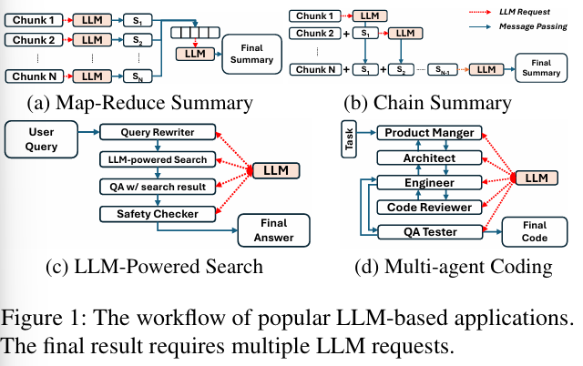
- Chain Summary：前一个摘要是后一个请求的输入，多个请求串行依赖。
- Map-Reduce Summary：多个 Map 请求并行，Reduce 等待全部结果。
- Multi-agent：不同角色多轮交换中间结果。
现有公共服务只看到独立 request，不知道请求属于哪个应用、彼此如何连接、最终输出要求低延迟还是高吞吐，因此存在三个问题：
- 依赖请求反复经过客户端。 A 的结果先返回客户端，客户端再提交 B；额外产生网络往返和重新排队。论文测得引擎外开销平均占 30%–50%，最差超过 70%。
- 单请求目标不等于应用目标。 Map 阶段更需要大 batch 提高整组吞吐，Reduce 阶段更需要低延迟；统一按单请求低延迟调度会拖慢最终结果。
- 共享 Prompt 被重复计算。 Chat Search、MetaGPT、AutoGen 的重复 Token 比例分别约为 94%、72% 和 99%，但 request-level 服务难以在集群层识别并共置共享前缀。
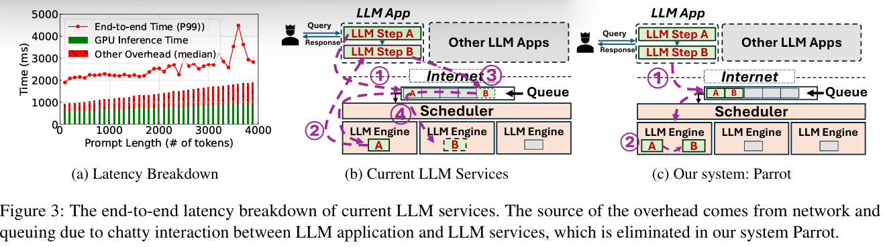
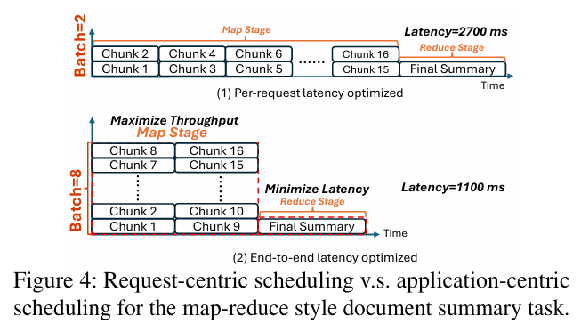
Figure 4 中，request-centric 调度限制 Map 请求的并发以降低单请求延迟，最终摘要耗时 2700 ms；application-centric 调度增大 Map batch、提高整组吞吐，端到端时间降至 1100 ms。
Key Insight
Parrot 将 LLM 应用而不是单个 request 作为优化对象。服务端需要获得三类信息：
| 信息 | 用途 |
|---|---|
| 请求依赖 | 构造 DAG，判断 ready 节点和并行 Task Group |
| 最终输出目标 | 推导中间请求偏向 latency 还是 throughput |
| Prompt 结构 | 识别共享前缀，复用 KV Cache |
Core Design
论文设计分为两部分：Section 4 用 Semantic Variable 可视化（标注？暴露？）应用信息；Section 5 再利用这些信息进行依赖执行、目标推导、前缀共享和调度。
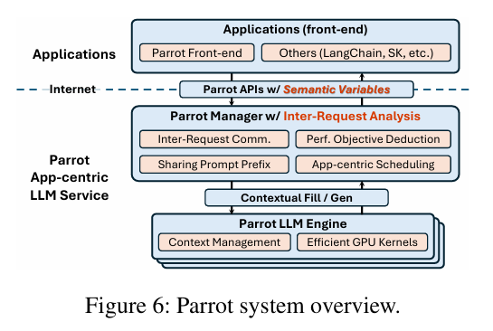
1. Semantic Variable 与 Inter-Request Analysis
开发者将 LLM 请求写成 SemanticFunction，并显式标出输入、输出变量（手动），上一个变量传给下一个输入等（感觉上偏工程实现）：
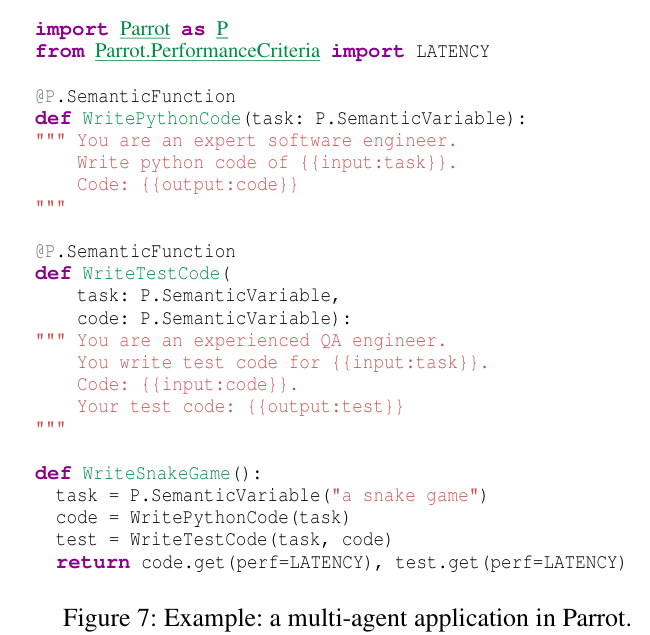
code 由第一个请求产生、被第二个请求消费，Parrot Manager 据此建立调用链
task → WritePythonCode → code → WriteTestCode → test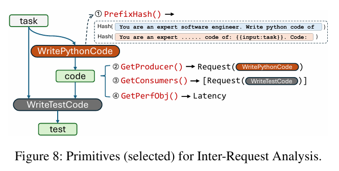
Manager 使用普通代码维护请求和变量组成的 DAG，并提供：
- GetProducer/GetConsumers ：读取变量的生产者和消费者；
- GetPerfObj ：读取最终变量的性能目标；
- PrefixHash ：在变量边界计算 Prompt 前缀 hash。
大模型只执行每个节点的文本生成，建图和分析由 Parrot Manager 完成。
2. Serving Dependent Requests
Parrot 将普通同步 completion 拆成异步 submit 和按需 get。应用可以提前提交多个 SemanticFunction；上游完成后，中间变量在服务端直接传给后继请求：
传统：A → 客户端 → 提交 B → 重新排队
Parrot：A → Semantic Variable 队列 → B后继请求在所有前驱完成后立即变为 ready，减少客户端往返。
3. Performance Objective Deduction
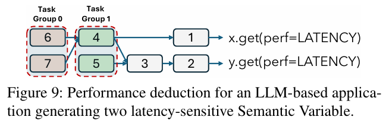
应用在最终 Semantic Variable 的 get(perf=LATENCY) 或 get(perf=THROUGHPUT) 中声明端到端目标。对于 THROUGHPUT，Parrot 将直接或间接生成该变量的请求标记为 throughput-preferred，倾向使用较大的 batch；对于 LATENCY，Manager 从最终变量沿请求 DAG 反向遍历，将直接产生最终结果的请求及其必要前驱标记为 latency-sensitive。（不明就里）..
x，y可以设置不同偏好来达到组合的想要的效果？
4. Sharing Prompt Prefix
PrefixHash 在 Semantic Variable 边界检测共同 Prompt，scheduler 再把共享请求放到同一 engine，就是尽量把共享前缀请求识别处理后放到同一个engine。Parrot 使用 context fork 复用共享 KV Cache，并实现结合 PagedAttention 与 FlashAttention 的 kernel，使共享前缀的 KV tile 尽量只加载一次。
5. Application-Centric Scheduling
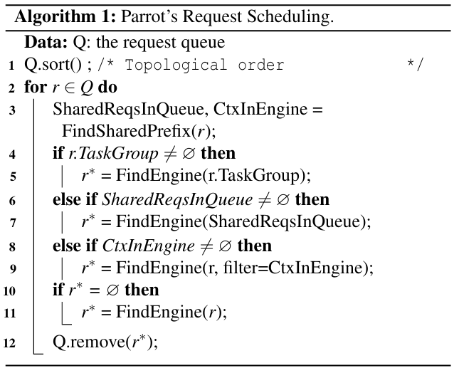
集群 scheduler 按拓扑顺序扫描请求：
- Task Group 尽量整体分配；
- 共享前缀请求尽量共置；
- 优先选择已有对应 context 的 engine；
- 否则选择满足请求性能偏好的普通 engine。
Parrot Manager 负责跨请求和跨 engine 调度；底层 Parrot Engine 仍采用 continuous batching 和分页 KV 管理。论文实现复用、改造了 vLLM 和 xFormers 的部分技术。
Experiment
| 项目 | 设置 |
|---|---|
| 单 GPU | 1×A100 80GB，LLaMA 13B/7B |
| 多 GPU | 4×A6000 48GB，每个 GPU 一个 LLaMA 7B engine |
| 工作负载 | Chain/Map-Reduce 摘要、Bing Copilot/GPTs、多 Agent 编程、混合负载 |
| Baseline | LangChain + FastChat，底层使用 HuggingFace Transformers 或 vLLM |
| 网络模拟 | 请求加入 200–300 ms 随机网络延迟 |
说明：
HuggingFace是 FastChat worker 使用 Transformersgenerate()执行模型，不是 DAG scheduler。vLLM-Latency限制 engine token capacity，偏向较低单请求延迟。vLLM-Throughput使用更大 batch/capacity，偏向总吞吐。w/ Sharing表示共享公共 Prompt 的 KV Cache；w/o Sharing表示每个请求重复计算和保存。
Result 1：依赖工作流
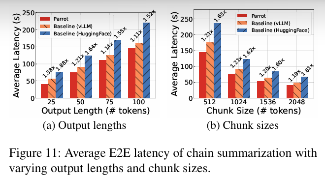
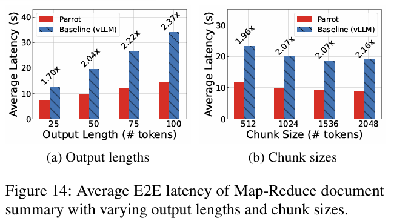
| 场景 | 相对 vLLM | |—|—:| | Chain Summary | 最高 1.38× 加速 | | Chain + 背景请求 | 最高 2.38× 加速 | | 多个 Chain 应用并发 | 平均 1.68× 加速 | | Map-Reduce Summary | 最高 2.37× 加速 |Chain 的收益主要来自服务端传递中间变量，Map-Reduce 的收益主要来自识别并批量执行 Map Task Group。
Result 2：共享 Prompt
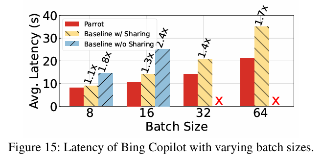
Bing Copilot 实验包含 64 个请求和约 6000-token 公共 system prompt（6000 token公共前缀？而且为什么是baseline without Sharing？）：
- 相比
w/o Sharing，Parrot 在 batch 8/16 下加速 1.8–2.4×； - 相比使用 vLLM PagedAttention 的静态前缀共享，Parrot 的专用 kernel（同一个共享 KV 加载一次多共享） 再加速 1.1–1.7×；
Result 3：Multi-agent
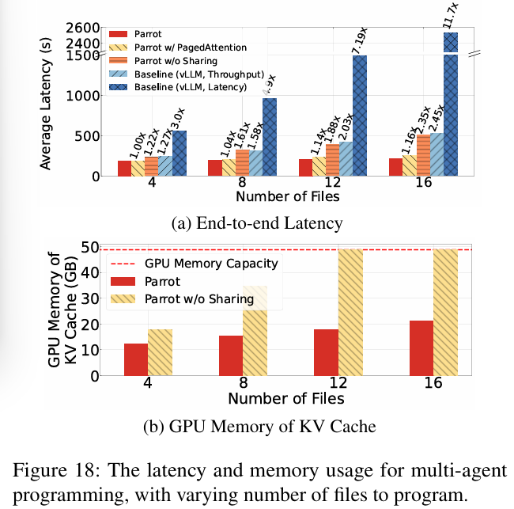
MetaGPT 风格任务包含 Architect、并行 Coder、Reviewer 和三轮 Revision。Parrot 识别并行 Task Group，并共享多轮动态上下文：
- 相比
vLLM-Latency最高加速 11.7×； - 相比
vLLM-Throughput最高加速 2.45×； - 关闭 Prompt sharing 后，12/16 文件时 KV Cache 超出 50GB 容量。
Result 4：混合负载
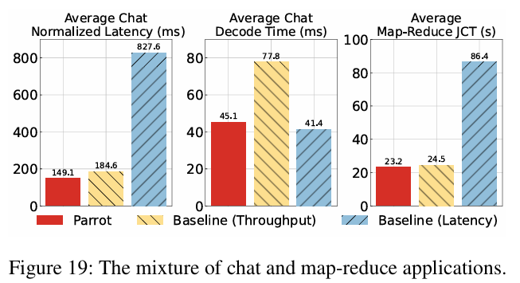
Parrot 将低延迟 Chat 与高吞吐 Map-Reduce 分配到不同 engine：Chat normalized latency 相比 latency/throughput baseline 分别改善 5.5×/1.23×；Map-Reduce 完成时间分别改善 3.7×/1.05×。
Restriction
- Parrot 主要支持可提前提交的 SemanticFunction；条件分支、Python native function 和动态控制流仍需客户端执行。
- 实验规模为单机 1×A100 或 4×A6000、LLaMA 7B/13B，未验证大规模异构集群。
- 请求缺少依赖和共享 Prompt 时，优化空间有限。
Parrot 解决了服务端如何看到 LLM 请求 DAG，但尚未将关键路径与 GPU、KV Cache、网络等多资源联合调度。